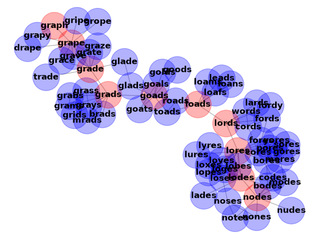

Note
Go to the end to download the full example code.
Words/Ladder Graph#
Generate an undirected graph over the 5757 5-letter words in the datafile
words_dat.txt.gz. Two words are connected by an edge if they differ in one
letter, resulting in 14,135 edges. This example is described in Section 1.1 of
Donald E. Knuth, “The Stanford GraphBase: A Platform for Combinatorial Computing”, ACM Press, New York, 1993. http://www-cs-faculty.stanford.edu/~knuth/sgb.html
The data file can be found at:

Loaded words_dat.txt containing 5757 five-letter English words.
Two words are connected if they differ in one letter.
Graph named 'words' with 5757 nodes and 14135 edges
853 connected components
Shortest path between chaos and order is
chaos
choos
shoos
shoes
shoed
shred
sired
sided
aided
added
adder
odder
order
Shortest path between nodes and graph is
nodes
lodes
lores
lords
loads
goads
grads
grade
grape
graph
Shortest path between pound and marks is
None
import gzip
from string import ascii_lowercase as lowercase
import matplotlib.pyplot as plt
import networkx as nx
def generate_graph(words):
G = nx.Graph(name="words")
lookup = {c: lowercase.index(c) for c in lowercase}
def edit_distance_one(word):
for i in range(len(word)):
left, c, right = word[0:i], word[i], word[i + 1 :]
j = lookup[c] # lowercase.index(c)
for cc in lowercase[j + 1 :]:
yield left + cc + right
candgen = (
(word, cand)
for word in sorted(words)
for cand in edit_distance_one(word)
if cand in words
)
G.add_nodes_from(words)
for word, cand in candgen:
G.add_edge(word, cand)
return G
def words_graph():
"""Return the words example graph from the Stanford GraphBase"""
fh = gzip.open("words_dat.txt.gz", "r")
words = set()
for line in fh.readlines():
line = line.decode()
if line.startswith("*"):
continue
w = str(line[0:5])
words.add(w)
return generate_graph(words)
G = words_graph()
print("Loaded words_dat.txt containing 5757 five-letter English words.")
print("Two words are connected if they differ in one letter.")
print(G)
print(f"{nx.number_connected_components(G)} connected components")
for source, target in [("chaos", "order"), ("nodes", "graph"), ("pound", "marks")]:
print(f"Shortest path between {source} and {target} is")
try:
shortest_path = nx.shortest_path(G, source, target)
for n in shortest_path:
print(n)
except nx.NetworkXNoPath:
print("None")
# draw a subset of the graph
boundary = list(nx.node_boundary(G, shortest_path))
G.add_nodes_from(shortest_path, color="red")
G.add_nodes_from(boundary, color="blue")
H = G.subgraph(shortest_path + boundary)
colors = nx.get_node_attributes(H, "color")
options = {"node_size": 1500, "alpha": 0.3, "node_color": colors.values()}
pos = nx.kamada_kawai_layout(H)
nx.draw(H, pos, **options)
nx.draw_networkx_labels(H, pos, font_weight="bold")
plt.show()
Total running time of the script: (0 minutes 0.246 seconds)